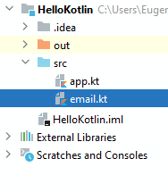

Пакеты в Kotlin представляют логический блок, который объединяет функционал, например, классы и функции, используемые для решения близких по характеру задач. Так, классы и функции, которые предназначены для решения одной задачи, можно поместить в один пакет, классы и функции для других задач можно поместить в другие пакеты.
Для определения пакета применяется ключевое слово package, после которого идет имя пакета:
1 | package email |
Определение пакета помещается в самое начало файла. И все содержимое файла рассматривается как содержимое этого пакета.
Например, добавим в проект новый файл email.kt:
И определим в нем следующий код:
1 2 3 4 5 6 7 | package emailclass Message(val text: String)fun send(message: Message, address: String){ println("Message `${message.text}` has been sent to $address")} |
Пакет называется "email". Он содержит класс Message, который содежит одно свойство text. Условно говоря, это класс представляет email-сообщение, а свойство text - его текст.
Также в этом пакете определена функция send(), которая условно отправляет сообшение на некоторый адрес.
Допустим, мы хотим использовать функционал этого пакета в другом файле. Для подключения сущностей из пакета необходимо применить директиву import. Здесь возможны различные способы подключения функционала из пакета. Можно подключить в целом весь пакет:
1 | import email.* |
После названия пакета ставится точка и звездочка, тем самым импортируются все типы из этого пакета. Например, возьмем другой файл проекта - app.kt, который определяет функцию main, и используем в нем функционал пакета email:
1 2 3 4 5 6 7 | import email.*fun main() { val myMessage = Message("Hello Kotlin") send(myMessage, "tom@gmail.com")} |
Поскольку в начале файла импортированы все типы из пакета email, то мы можем использовать класс Message и функцию send в функции main.
Консольный вывод данной программы:
Message `Hello Kotlin` has been sent to tom@gmail.com
Также можно импортировать типы, определенные в пакете, по отдельности:
1 2 | import email.sendimport email.Message |
С помощью оператора as можно определять псевдоним для подключаемого типа и затем обращаться к этому типу через его псевдоним:
1 2 3 4 5 6 7 8 | import email.send as sendEmailimport email.Message as EmailMessagefun main() { val myMessage = EmailMessage("Hello Kotlin") sendEmail(myMessage, "tom@gmail.com")} |
Здесь для функции send() определен псевдоним sendEmail. И далее для обращения к этой функции надо использовать ее псевдоним:
1 | sendEmail(myMessage, "tom@gmail.com") |
Также для класса Message определен псевдоним EmailMessage. Соответственно при использовании класса необходимо применять его псевдоним, а не оригинальное имя:
1 | val myMessage = EmailMessage("Hello Kotlin") |
Псевдонимы могут нам особенно пригодится, если у нас импортируются из разных пакетов типы с одним и тем же именем. Например, пусть в проекте есть файл sms.kt:
1 2 3 4 5 6 7 | package smsclass Message(val text: String)fun send(message: Message, phoneNumber: String){ println("Message `${message.text}` has been sent to $phoneNumber")} |
Здесь определен пакет sms также с классом Message и функцией send для отправке сообшения по sms.
Допустим, в файле app.kt мы одновременно хотим использовать класс Message и функцию send и из файла email.kt, и из файла sms.kt:
1 2 3 4 5 6 7 8 9 10 11 12 13 | import email.send as sendEmailimport email.Message as EmailMessageimport sms.send as sendSmsimport sms.Message as SmsMessagefun main() { val myEmailMessage = EmailMessage("Hello Kotlin") sendEmail(myEmailMessage, "tom@gmail.com") val mySmsMessage = SmsMessage("Hello Kotlin") sendSms(mySmsMessage, "+1234567890")} |
Kotlin имеет ряд встроенных пакетов, которые подключаюся по умолчанию в любой файл на языке Kotlin:
kotlin.*
kotlin.annotation.*
kotlin.collections.*
kotlin.comparisons.*
kotlin.io.*
kotlin.ranges.*
kotlin.sequences.*
kotlin.text.*
Поэтому если возникнет необходимость использовать какие-то типы, определенные в этих пакетах, то явным образом эти пакеты не нужно импортировать.